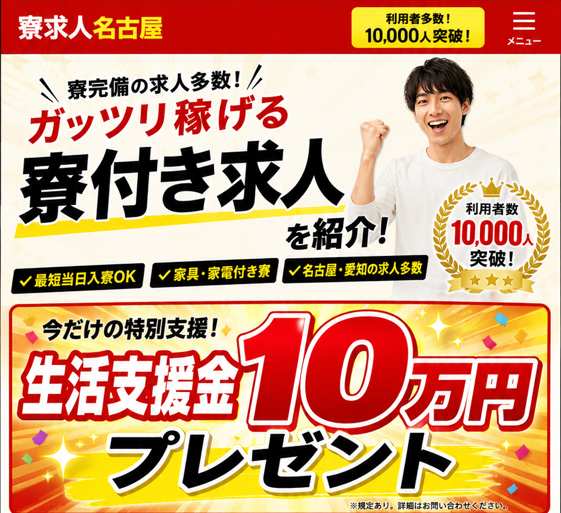
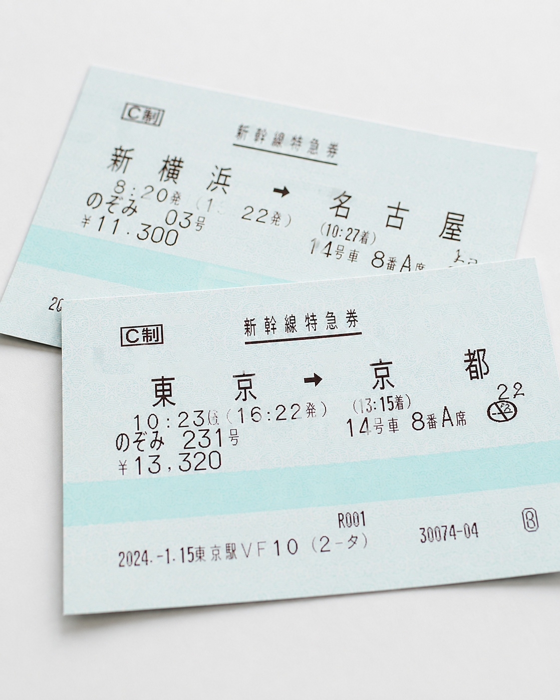

01
返金不要※規定あり
生活支援金
10万円
対象求人・支給条件あり

本日 LINE相談受付中!!
LINE＼ 30秒で相談完了 ／寮付き求人を無料で紹介›✓住む家がなくなった
✓所持金が切れそう
✓携帯が止まって面接も受けにくい
✓身分証明書・口座がなく働けるか心配
✓他社では応募さえ断られてしまった
✓生活を早く立て直したい
対象求人・支給条件あり

最短即日入寮の相談も可能
生活に不安がある方もご相談ください

移動条件は求人ごとに確認

応募に必要な連絡方法もサポート
 名古屋近郊
名古屋近郊※上記は掲載用モデル例です。参考サイトの訴求に合わせて数値感を反映したサンプルです。公開時は実際の求人条件へ差し替えてください。
LINE希望条件を送るだけ今ある求人を聞いてみる›所持金に不安がありましたが、寮付き求人と生活支援の相談を一緒に進められて助かりました。
未経験OKの求人を中心に提案してもらえたので、条件を比較しながら決められました。
入寮日の目安や赴任条件を先に確認できたので、安心して応募できました。
まずはLINEで、現在の状況や希望条件をお気軽にご相談ください。
寮・給与・勤務地・勤務開始日などをヒアリングし、条件に合う求人を整理します。
選考後、入寮日や移動方法などの段取りを確認。最短即日の相談にも対応します。
勤務開始後も不安な点があれば相談可能。参考サイトの流れに合わせた構成です。
入寮可能日は求人・寮の空き状況によって異なります。希望日をお伺いし、現在案内可能な案件から確認します。緊急性が高い場合はその旨を最初にご相談ください。
可能です。応募や面接に必要な連絡方法も含めて、現在の状況を踏まえて相談できる導線にしています。
勤務地・寮条件・仕事内容・収入など、できるだけ希望条件を確認したうえでご案内する想定です。長く働けることを前提にご相談いただける構成にしています。
必要書類は求人や選考先により異なります。現在の状況を相談いただき、応募前に必要事項を確認できるようにしています。
参考サイトの内容に合わせ、就業開始までの案内だけでなく、その後の不安も相談しやすい見せ方にしています。公開時は実際のサポート範囲に合わせて最終調整してください。
※求人・支援内容には条件があります。実際の募集条件を確認したうえでご応募ください。